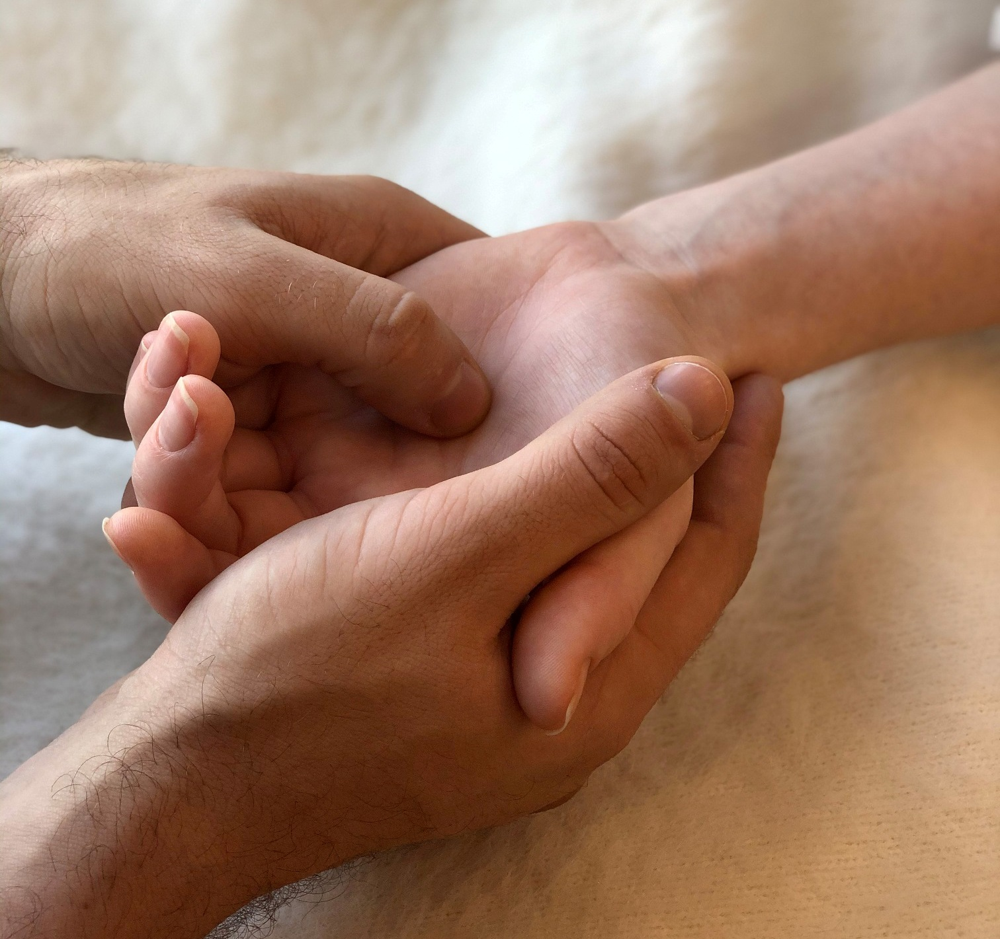

Даосский массаж
Главным назначением даосского массажа является восстановление за короткое время энергетики и всех функций тела, устранение всех препятствий, которые мешают жизненной энергии свободно протекать по телу.
Он нацелен на снятие блоков и зажимов в теле. Воздействие на биологически активные точки позволяет расслабить мышцы и гармонизировать внутренние ощущения.
Душевное равновесие, гармония с самим собой, приобретение покоя - все это мы получаем во время даосского массажа. Особенностью этого массажа является интуитивный подход к воздействию на человеческий организм, с использованием приемов китайской акупунктуры, тайских приемов с растяжением мышц, контактного и бесконтактного массажа.
Массаж нацелен на профилактику заболеваний, восстановление энергетического баланса и повышение жизненной активности у людей, страдающих от общего ухудшения самочувствия, вялости, раздражительности, сонливости. Он значительно усилит сопротивляемость вашего организма к факторам внешней среды.
Рекомендуется также при стрессе, хронической усталости.
На занятиях по цигун (даосской йоге) мы изучаем различные приемы даосского
массажа, методы подготовки рук массажиста.
Присоединяйтесь!